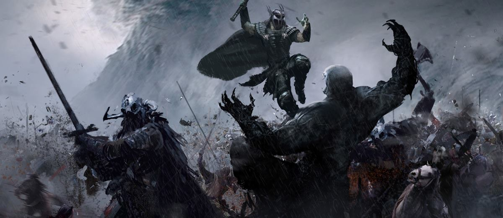
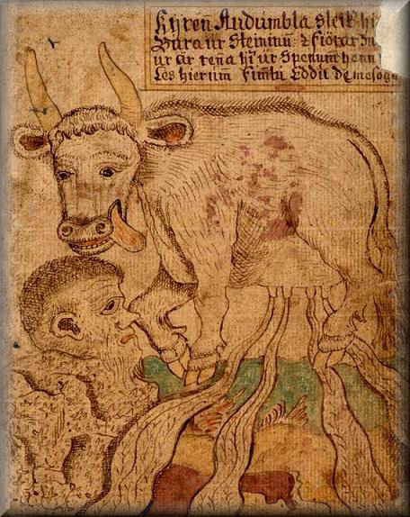
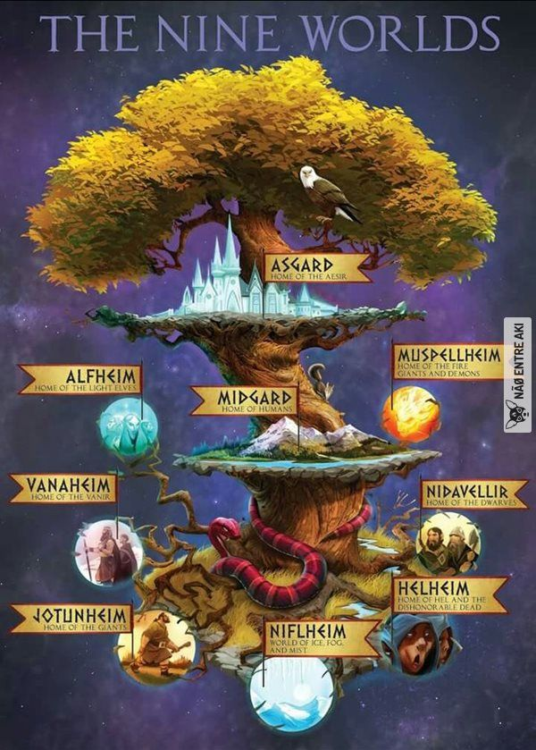
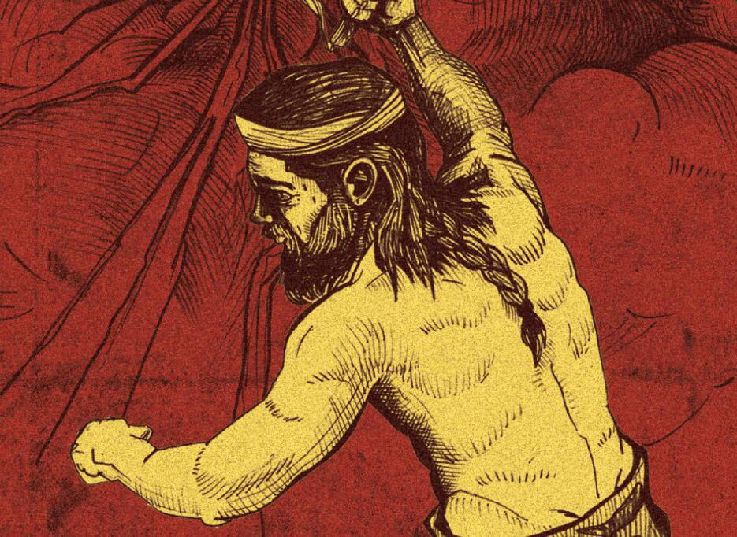
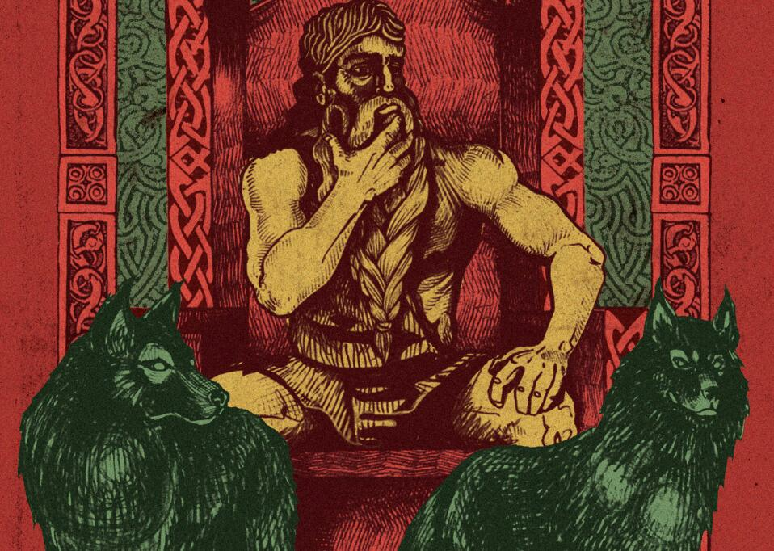
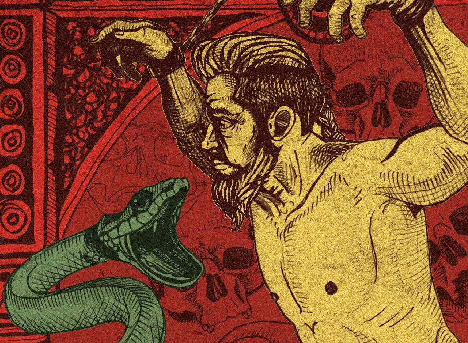
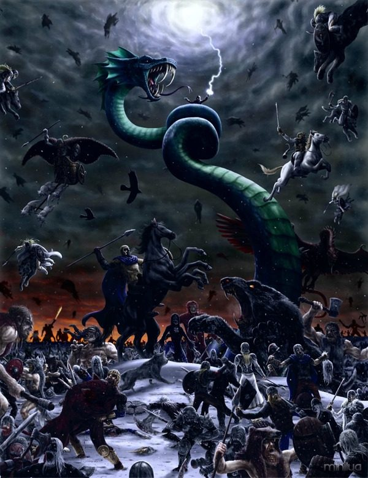
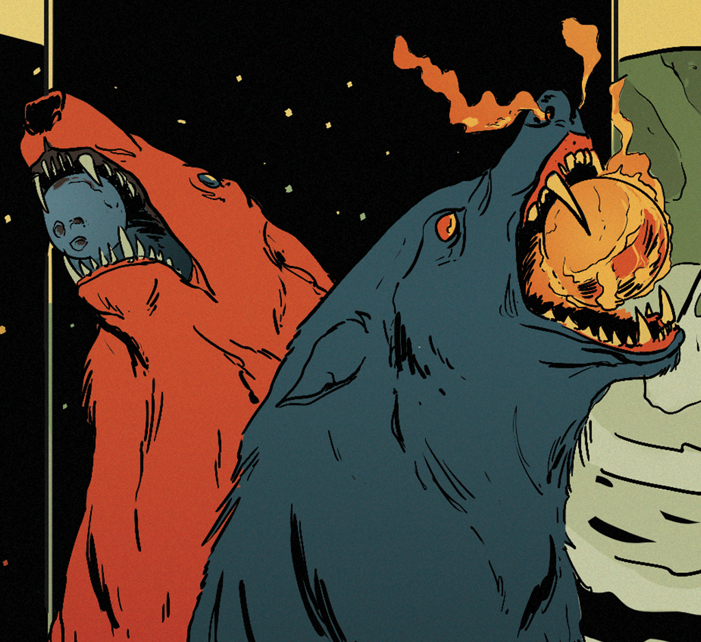
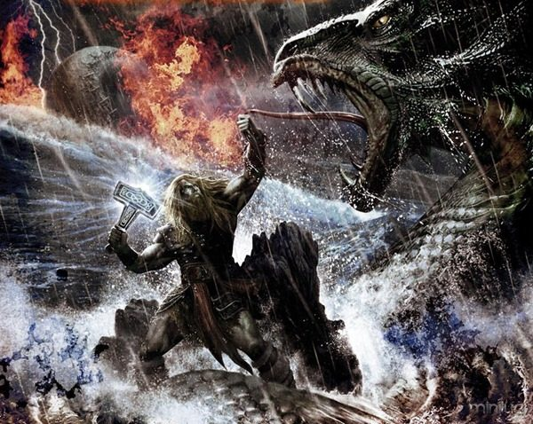

Mundo Nórdico

Primeiro, havia o Caos, que era o Nada do Mundo, e isto era tudo quanto nele havia. Nem Céu, nem Mar, nem Terra – nada disto havia. Apenas três reinos coexistiam: o Ginnungagap (o Grande vazio), abismo primitivo e vazio, situado entre Musspell (o Reino do Fogo) e Niflheim (a Terra da Neblina), terra da escuridão e das névoas geladas. Durante muitas eras, assim foi, até que as névoas começaram a subir lentamente das profundezas do Niflhein e formaram no medonho abismo de Ginnungagap um gigantesco bloco de gelo.
Das alturas abominavelmente tórridas do Musspell, desceu um ar quente e este encontro do calor que descia com o frio que subia de Niflheim começou a provocar o derretimento do imenso bloco de gelo. Após mais alguns milhares de eras – pois que o tempo, então, não se media pelos brevíssimos anos de nossos afobados calendários – o gelo foi derretendo e pingando e deixando entrever , sob a outrora gelada e espessa capa branca, a forma de um gigante.
Ymir era o seu nome – e por ser uma criatura primitiva, dotada apenas de instintos, o maniqueísmo batizou-a logo de má (maniqueísmo: explicações da realidade na oposição entre boa e má). Ymir dormiu durante todas estas eras, enquanto o gelo que o recobria ia derretendo mansamente, gota a gota, até que, sob o efeito do calor escaldante de Musspell, que não cessava jamais de descer das alturas, eis que ele começou a suar. O suor que lhe escorria copiosamente do corpo uniu-se, assim, à água do gelo, que brotava de seus poderosos membros – e este suor vivificante deu origem aos primeiros seres vivos. Debaixo de seu braço surgiu um casal de gigantes e da união de suas pernas veio ao mundo outro ser da mesma espécie, chamado Thrudgelmir. Estes três gigantes foram as primeiras criaturas, que surgiram de Ymir; mais tarde, Thrudgelmir geraria Bergelmir, que daria origem à toda a descendência dos gigantes.

Entretanto, do gelo derretido também surgira, alem das monstruosidades já citadas, uma prosaica vaca de nome Audhumla, de cujas tetas prodigiosas manavam quatro rios, que alimentavam o gigante Ymir. Audhumla nutria-se do gelo salgado, que lambia continuamente da superfície, e, deste gelo, surgiu ao primeiro dia o cabelo de um ser; no segundo, a sua cabeça; e, finalmente, no terceiro, o corpo inteiro. Esta criatura egressa do gelo chamou-se Buri e foi a progenitora dos deuses. Seu primeiro filho chamou-se Bor, e, desde que pai e filho se reconheceram, começaram a combater os gigantes, que nutriam por eles um ódio e um ciúme incontroláveis.
Esta foi a primeira guerra de que o universo teve notícia e incontáveis eras sucederam-se sem que ninguém adquirisse a supremacia. Finalmente, Bor casou-se com a giganta Bestla e, desta união, surgiram três notáveis deuses: Odin (chamado também de Wotan), Vili e Ve. Dos três o mais importante era Odin, que um dia chegará a ser o maior de todos os deuses. E, porque assim será um dia, ele próprio disse a seus irmãos:
-Unamo-nos a Bor e destruamos Ymir, o perverso pai dos gigantes!
Os quatro juntos derrotaram, então, o poderoso gigante, e com sua morte acabou também a quase totalidade dos demais de sua espécie, afogada no sangue de Ymir. Um casal, entretanto, escapou do massacre: Bergelmir e sua companheira, que construíram um barco feito de um tronco escavado e foram se refugiar em Jotunheim, a terra dos gigantes, onde geraram muitos outros. Desde então, a inimizade estabeleceu-se, definitivamente, entre deuses e gigantes, cada qual vivendo livremente em seu território, mas sempre alerta contra o inimigo.
Dos restos do cadáver do gigantesco Ymir, Odin e seus irmãos moldaram a Midgard (Terra Média): de sua carne, foi feita a terra; enquanto que, de seus ossos e seus dentes, fizeram-se as pedras e as montanhas. O sangue abundante de Ymir correu por toda a terra e deu origem ao grande rio que cerca o universo.
– Ponhamos, agora, a caveira de Ymir no céu – disse Odin a seus irmãos, após haverem completado a primeira tarefa.
Odin fez com que quatro anões mantivessem a caveira suspensa nos céus, cada qual num dos pontos cardeais. Em seguida, das faíscas do fogo de Musspell, brotaram o sol, a lua e as estrelas; enquanto que, do cérebro do gigante, foram engendradas as nuvens, que recobrem todo o céu.
Entretanto, após terem remexido a carne do gigante, com a qual moldaram a terra, os três deuses descobriram nela um grande ninho de vermes. Odin penalizado destas criaturas decidiu dar-lhes, então, outra morada, que não, o Midgard. Os seres subumanos, que pare3ciam um pouco mais turbulentos que os outros, foram chamados de Anões e receberam como morada as profundezas sombrias da terra (Svartafheim). Os demais que pareciam ter um modo mais nobre de proceder, foram chamados de Elfos e receberam como morada as regiões amenas do Alfheim.
Completada a criação de Midgard, caminhavam, um dia, Odin, Vili e Ve sobre a terra para ver se tudo estava perfeito, quando encontraram dois grandes pedaços de troncos caídos ao solo, próximos ao oceano. Odin esteve observando-os longo tempo, até que, afinal, teve outra grande idéia:
-Irmãos, façamos de um destes troncos um homem e do outro, uma mulher!
E assim se fez: ele foi chamado de As (Freixo) e ela, de Embla (Olmo). Odin lhes deu a vida e o alento; Vili, a inteligência e os sentimentos; e Ve, os sentidos da visão e da audição. Este foi o primeiro casal, que andou sobre a terra e originou todas as raças humanas que habitariam por sucessivas eras a Terra Média.
E assim se fez: ele foi chamado de As (Freixo) e ela, de Embla (Olmo). Odin lhes deu a vida e o alento; Vili, a inteligência e os sentimentos; e Ve, os sentidos da visão e da audição. Este foi o primeiro casal, que andou sobre a terra e originou todas as raças humanas que habitariam por sucessivas eras a Terra Média.
Depois que Midgard e os homens estavam feitos, Odin decidiu que era preciso que os deuses tivessem também uma morada exclusiva para si:
– Façamos Asgard e que lá seja o lar dos deuses! Exclamou ele, que, como se vê, era um deus de energia e vontade inesgotáveis.
Na mitologia nódica há outros universos(reinos) que estão ligados entre si por uma árvore: A árvore dos nove reinos, que são:

Na fé viking, não havia livros sagrados, dogmas ou sacerdotes. Nem por isso eles davam menos importância aos rituais de devoção aos seus deuses, que ocorriam em qualquer lugar e incluíam até sacrifícios humanos. Os detalhes dessa religião só chegaram até nós por causa de dois livros do século 13, Edda Poética, de autoria desconhecida, e Edda em Prosa, do historiador islandês Snorri Sturluson. Entre os deuses, havia dois grupos principais: aesir e vanir. O clã dos aesir, chefiado por Odin, era de guerreiros natos que habitavam Asgard, um dos nove mundos mitológicos. Volta e meia, entravam em conflito com o outro grupo. Associados à natureza e à feitiçaria, os vanir viviam em Vanheim e não eram dados à guerra. Para garantir a paz, alguns vanir viraram reféns dos deuses guerreiros. As divindades nórdicas se apaixonavam, casavam, traíam e se separavam, sem maiores traumas. Além disso, eram mortais. Havia deuses sem pai conhecido, ou com nove mães, outros cegos, sem olho, braço, rosto desfigurado e com um enorme pênis, objeto também de culto. E havia outros personagens mais mundanos, mas que ajudavam no enredo mitológico. Anões e duendes eram exímios ferreiros e artesãos. Os elfos eram criaturas iluminadas, que gozavam de uma vida boa e sem maiores preocupações. As valquírias, as servas de Odin, levavam os mortos em combate ao panteão dos heróis, Valhalla. O grupo dos gigantes ameaçava os deuses, e era aguardada uma batalha final entre eles no Ragnarök, o apocalipse que colocaria fim a tudo (até surgir um novo mundo).
Um dos deuses mais poderosos e amados pelos vikings, Thor era sempre chamado por seu pai, Odin, a defender as divindades da ameaça dos gigantes ou ir enfrentá-los em Jotunheim, a terra dos grandões, nas narrativas mitológicas. Com a intervenção de Thor, as forças do mal não conseguiam prevalecer, e o fim do mundo era adiado. Mas a principal inimiga de Thor era mesmo a serpente Jormungand, filha de Loki. Eles entraram em embate pelo menos três vezes, e a última seria no Ragnarök, o crespúsculo dos deuses no qual o mundo acaba – não fique triste, na mitologia viking o final é o começo de algo novo. Em um dos duelos, Thor ¿pescou¿ a serpente lançando uma cabeça de boi como isca. Jormungand engoliu a isca e Thor puxou o anzol com força. Ficaram em um cabo de força até que os pés de Thor quebraram o casco da embarcação onde ele estava, e o herói dos deuses viking foi parar no fundo do mar. O gigante Hymir, que estava próximo, ficou com tanto medo de Jormungand, que aquela hora se contorcia no mar, provocando inundações e cuspindo veneno, que decidiu ajudar a divindade. Cortou a linha que mantinha Thor preso ao anzol, e o deus dos trovões conseguiu lançar seu martelo sobre a terrível serpente, que voltou para o fundo do oceano. Mjölnir era terrivelmente pesado – só Thor conseguia empunhá-lo. Mas o martelo se tornou um símbolo da força e era usado como um amuleto pelos guerreiros vikings.

Odin era considerado pelos vikings o criador do Universo e era o chefe do clã dos deuses guerreiros, os aesir. Mas ele reunia também superpoderes, como a vidência, associados ao outro grupo dos deuses, os vanir. Odin teria dado um de seus olhos em troca do poder de enxergar o passado, prever o futuro e alterar o destino dos homens. Era considerado o criador das runas, alfabeto usado na Escandinávia com poderes mágicos, e o maior mestre em feitiçaria, conhecida como seyd. Os vikings pediam a Odin qualquer coisa: ajuda nos partos, um marido ou uma esposa, força nas batalhas, menos frio, mais chuva. Mas ele não era tão bonzinho assim – uma das características dos deuses vikings era sua ambivalência ou sua profunda humanidade, o que pode parecer estranho sob um olhar cristão. O nome Odin significava ¿o furioso¿, e um dos papéis do chefe dos deuses era recepcionar os combatentes mortos em Valhalla, o lar pós-morte dos heróis. Andava em um corcel de oito patas, Gungir, tinha dois lobos como mascotes, Geri e Freki, e recebia informações de Midgard, a terra dos homens, pelos corvos Huginn (que significa pensamento) e Muninn (memória), que sobrevoavam os campos nórdicos. Seu primogênito Thor se tornou o segundo deus mais conhecido do clã aesir. Mas Odin teve outros três rebentos: Balder, Hermond e Hoder.

Frigg mantinha uma relação aberta com Odin: viviam em casas separadas. Ela também dava suas puladas de cerca até com seus cunhados, Vile e Ve, o que não a impediu de ser reconhecida como a protetora das mulheres e dos casamentos. Com Odin, a deusa do amor teve três filhos: Balder, Hermod e Hoder, o deus cego. Como era uma mãezona, sobrava amor para cuidar dos seus muitos enteados, como Thor, Tyr, Bragi, Vali e Vidar.
Mulher de Thor, Sif tinha longos cabelos loiros e era associada aos campos de trigo e à família. Era mãe de Thrud, filho de Thor, e de Ullr, cujo pai era desconhecido. Uma vez, entediado por causa de uma insônia, Loki foi procurar Thor no castelo Bilskirnir. Thor não estava, mas Loki encontrou a linda Sif dormindo. Só para implicar, cortou suas longas melenas e a deixou praticamente careca. Descoberto, Loki teve que encomendar novas madeixas do mais puro ouro aos duendes, exímios artesãos.
Irmão de Thor e filho de Odin e Frigg, Balder era o mais puro e belo dos deuses. Ele amava tudo e todos, e era amado por todos, exceto por Loki, que tinha inveja da sua queridice. Balder acabou morrendo: Loki criou um concurso de arremessos contra o belo. Todos erravam o alvo de propósito, mas Loki ludibriou Hoder, o irmão cego de Balder, para lançar uma flecha direto ao coração do irmão. O assassinato de um deus por outro era um delito grave, e Midgard mergulhou no caos.

Loki era filho de gigantes, mas impressionou os deuses por suas boas maneiras, incluindo Odin, que se tornou seu irmão em um ritual no qual ambos se cortaram e misturaram seus sangues (os vikings acreditavam que esse ato criava laços ainda mais fortes que os de irmãos de nascença). Loki ganhou prestígio no panteão dos deuses, mas nem por isso parou de arrumar problemas. Ele era do mal. Em outra ocasião, depois do assassinato da gigante Angerboda, Loki comeu seu coração. Foi então que o mal aflorou com mais força dentro dele. Ele se refugiou em uma floresta e lá deu à luz três monstros: o lobo Fenrir, a serpente Jormungand e Hel, a deusa da morte. Jormungand espalhava destruição por onde andava. Odin lançou a serpente no mar e a almadiçoou a passar a eternidade comendo o próprio rabo – seu corpo dava a volta na Terra e ela comia sua cauda pensando ser a de outro animal. Loki também ludibriou a deusa Idun, que fornecia maçãs da juventude aos deuses, a sair de Asgard. Assim que deixaram a terra dos deuses, Idun foi levada por Tjatsi à terra dos gigantes. Odin ficou furioso e fez Loki prometer que traria Idun de volta. Loki cumpriu a promessa, mas isso provocou a morte do gigante Tjatsi. A filha do gigante, Skadi, bateu nos portões de Asgard para vingar o pai. Para acalmar a ira de Skadi, os deuses deixaram que ela escolhesse, como recompensa, um deus com quem casar. Ela se casou com Njord, o deus dos mares. Mas o casal não foi feliz – ela queria viver nas montanhas, e ele, no oceano. Sem dramas, se separaram.
Freyja era uma feiticeira muito sensual. Sua fama era de ser a garota de programa dos deuses, uma Afrodite nórdica. Ela andava com uma carruagem puxada por gatos brancos, usava um casaco de pele de gavião, que a fazia voar em busca de prazer, e ostentava um belo colar chamado Brisingamen. Era a mãe das valquírias, servas de Odin incumbidas de buscar os guerreiros mortos.
Irmão gêmeo de Freyja, Frey era associado à fertilidade e à agricultura. Por isso, a representação de seu, digamos, instrumento era tão avantajada que escandalizou os cristãos recém-chegados à Escandinávia. Frey se apaixonou pela giganta Gerd e decidiu dar sua espada aos gigantes em troca da mão da amada, que aceitou o pedido. Odin ficou furioso. Foi o estopim da primeira guerra do mundo.
Filha de Loki e da gigante Angerboda, Hel tinha metade do rosto normal e metade decomposto, como um cadáver. Era a guardiã do Hel, o mundo dos mortos. Ela abrigava tanto deuses quanto gigantes, mas só quem morria fora de combate ia para lá – quem tombava em batalha ia para Valhalla, o lar dos heróis. Para os vikings, morrer de doença ou de velhice era uma desonra terrível, com uma recompensa ainda pior: dar de cara com Hel.
Não sei se vocês sabem, mas a mitologia nórdica possui sua própria versão do fim dos tempos conhecida como Ragnarok, que prevê o fim do mundo, derrota dos deuses nórdicos e o fim do próprio universo. Essa épica batalha tomará lugar em Midgard, no reino dos humanos e colocará os asgardianos – liderados por Odin – contra os gigantes e outros monstros – liderados por Loki.

Antes de tudo acontecer, Loki havia sido preso, juntamente de outros monstros, e condenado à eterna tortura. Entretanto, como ele possuía uma lábia e uma influência que ia muito além de sua prisão, ele conseguiu instigar vários conflitos entre os seres humanos.
Além disso, temos os dois lobos – Skoll e Hati – que perseguiam incessantemente o sol e a lua, mas sem nunca conseguir alcançar os astros para devora-los. Eis que, quando o Ragnarok está para começar, os dois lobos finalmente alcançam o sol e a lua, fato que mergulha a Terra em trevas e que provoca vários terremotos por Midgard, e isso acaba soltando Loki e os gigantes de suas prisões.

Os asgardianos, ao saber do ocorrido, aliam-se aos milhares de guerreiros mortos que repousavam no Valhalla e também aos diversos espíritos naturais, chamados de Vanas e migram para o campo de Vigrid – onde seria tramada a batalha final que fora profetizada.
Do outro lado, temos Loki e seus seguidores, além dos mortos que vieram do inferno, e então o grande conflito acontece.
Fenrir, um lobo que é filho de Loki e pai de Skoll e Hati, é o responsável por tomar a vida de Odin em uma luta que feriu gravemente o grande lobo, mas foi Vidar, um dos filhos de Odin e superado, em força, somente por Thor, que matou Fenrir. Ao ver seu pai ser morto pela fera, Vidar rumou para Fenrir com um ódio único e decidiu matar o lobo por dentro: quando o mesmo tenta abocanhá-lo, Vidar pisa em sua língua e com sua força empurra a parte de cima da boca do lobo para cima até parti-lo em dois.
Thor travaria uma batalha com Jormungand, uma serpente filha de Loki. Thor consegue mata-la com sua força e com a ajuda do Mjolnir, entretanto, antes de morrer, ela acaba mordendo Thor e envenenando-o, o que acaba resultando na morte de Thor. Existem versões que narram que mesmo depois de morrer, Thor não soltou seu martelo de forma alguma, e que ninguém conseguiu separar o deus de sua arma.

Loki, finalmente, acaba tendo uma difícil batalha com Heimdall, o guardião da ponte que levava ao reino dos AEsir, entretanto, dessa batalha não há nenhum vencedor, pois ambos acabam falecendo, um perante ao outro, de uma forma que não é citada pelos textos antigos.
Após, então, inúmeras mortes, principalmente as de Odin e Loki, tudo começa a ruir, principalmente Yggdrasil, a Árvore dos Mundos, que havia sido derrubada por Nidhogg que a roeu por incontáveis anos.
A maioria dos deuses acabou encontrando a morte, mas alguns deles sobreviveram, como Vidar e Magni – um dos filhos de Thor. Além disso, um casal de humanos, Lif e Lifthrasi, se escondeu na carcaça de Yggdrasil e acabaram sobrevivendo, e são eles que serão responsáveis por perpetuar a espécie humana. Nidhogg, a grande serpente, sobrevive para que o equilíbrio do bem e do mal seja mantido. Um novo sol surgirá das carcaças e escombros, e do mar surgirá uma nova terra. Com isso, o Ragnarok se passou, e os principais males foram extintos para sempre.